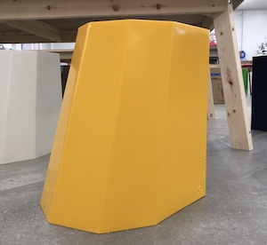
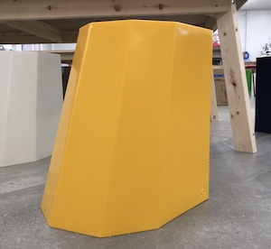

Arnold Circus Stool Ⅱ Martino Gamper
測定結果

定規を使って計測を行ったが、角が丸まっていたので
始点と終点を定めるのが難しくそこで誤差が生まれた気がする。
印を付け計測を行えば誤差がなくなると思う。
現物のモデル
 



３Dモデル
モデリングする際は対称の点を設定し、対称の辺同士を等しい関係にさせる。
そこで対称の点同士の間隔の数値を入力すれば座面と床面は完成。
床面と座面を高さ分開けて繋いであげればアウトラインの塊は完成。
そこから空洞部分を作り、角を取れば完成です！


製造方法の予測
素材がリサイクルのプラスチックだと椅子に刻まれたマークから予想。
プラスチックの種類までは分からない。金型にプレスして成形している気がする。
調べた結果
素材は回転成形ポリエチレンプラスチック。UK産のもので100%リサイクル。
成形方法は回転成形。金型内部に粉末状の原料を入れ、金型を熱しながら
原料を溶かして行き回転させていく。原料が全て溶けて金型内面に付着したら
冷却工程に入ります。基本は自然冷却。そして金型から外せば完成です。
参考にしたサイト
Arnold Circus Stoolについて
回転成形について